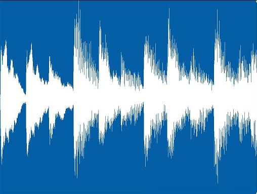
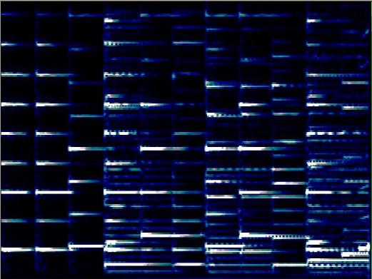
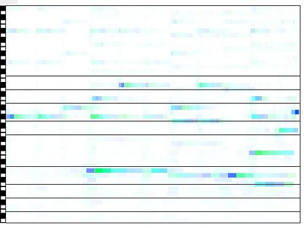

05/24/2007
Time - Frequency representations of music
Introduction
The basic way to handle and store digitized
music
is in the time domain. This means that the amplitude of sound waves is
sampled periodically. The result is a sequence of numbers, a function
of discretized time. From them it is easy to rebuild an analog signal
that can be sent to a loudspeaker for listening. Music CDs work this
way. The amplitude values can also shown as a graph, and in this way it
is easy to see how sound volume varies with time. It is the usual view
for audio edition in music software.
This figure shows a temporal representation
of this music excerpt:

However, when we listen to music, we
distinguish
between sounds with different pitch, and can tell which is higher.
Musicians have been using notations that show the frequency of the
notes at different times for centuries. It seems natural to ask for a
way of representing digitized sound that has these properties, and that
can also be modified and converted back to audible sound.
There are many applications that require time - frequency
representations. They include multi band compression and other
mastering
tools, note identification and source separation, some kinds of
equalizers and some musical effects.
Usual Time - Frequency representations
The standard way to do time - frequency
analysis
and processing is the Short Time Fourier Transform (STFT), with a fixed
window size between 1024 and 8192, for the usual sampling frequencies
of 44.1kHz and 48 kHz. However, the STFT has disadvantages. The
following figure shows the spectrogram (magnitude of the STFT) for the
same sound, with a window size of 4096. Only frequencies from 0Hz to
4kHz are shown. The frequency resolution is 21.6Hz of and the time
resolution is 93mS. It has 185 bands.

The frequency resolution is not enough for
discriminating semitones at lower frequencies. And the time frequency
is not enough for discriminating fast notes. Can we do better?
What's really needed
A musical instrument with a low register,
such as
the double bass or the tuba can not play fast notes. And if we try
playing a fast melody on lower notes on a synthesizer, it sound more
and more like percussion and less and less like a melody. Lower notes
need longer time to stabilize on a definite frequency. And the ear
needs more time to make sense of them. On the other hand, high pitched
notes can be very short and they need less frequency resolution. The
higher the note, the wider its bandwidth.
What is needed is a way to represent sounds that uses high frequency
resolution for low pitches and high time resolution for high pitches.
The uncertainty principle is a theorem that bounds the simultaneous
time and frequency localization of any signal. This means there is a
trade off between them, and to get better localization in one domain we
must give up some localization in the other. Continuous wavelet
transforms do this and are successfully used for note identification.
However, they give redundant representations and for this they are not
good for getting back an audible sound after manipulation. Discrete
wavelet transforms can be used for sound reconstruction, but they can
not handle semitone bands.
My story
I heard about Wavelets for the first time
around
1992 or 1993. They said they made it possible to decompose any signal
in "time-frequency atoms". Each atom would span over a time interval
and a frequency band, and would be indivisible. I understood they were
the fundamental time-frequency elements any sound was made of. The idea
of an audio editor that allows modification of each block, allowing a
perfect control of the sound seemed unavoidable.
I had this idea in the back of my mind for several years. Later, closer
to the end of my studies at the University, I knew that Dr. Ana Ruedin
teaches an elective course on wavelets, called "New techniques for data
compression". I decided to take it, willing to learn about the
techniques to implement them. There I learned the truth: wavelets are
great for image processing, but were not successful at audio. They are
not "the elementary blocks sound is made of". There were many wavelet
families, with different properties, but none was as fundamental and
revolutionary as I imagined.
But I kept believing something could be done. A digital signal of n
samples is a vector in Rn. Linear Algebra says
there are infinite bases
for such a space. And Heisenberg uncertainty principle states that a
time frequency atom spans over a time interval and a frequency interval
that can not be both arbitrary small. There would be many ways to
decompose a signal in different sets of atoms. It is a matter of
choosing the atoms to be close to the uncertainty principle, and
spanning over appropriate areas of the time-frequency plane.
Fortunately, Dr. Ruedin believed it was worth supporting my effort, and
accepted being my thesis adviser. The result was:
My transform
This picture shows the graph of my transform
on
the same music fragment. It is an invertible transformation consisting of an
orthogonal base. The elements of the base are well located both in
frequency and in time. The representation has one band per semitone in
the equal temperament musical scale. Therefore higher bands have greater
bandwidth. The frequency scale in the graph is logarithmic, so they
have
the same height. The bands are critically sampled, meaning that lower
bands are longer in time than higher ones.

I superimposed two staffs at the usual
clefs
for piano music.
On the left is a representation of the black and white notes on a
piano. Together, these help interpreting the notes in the music. This
transform has 4 octaves, or 48 semitone bands.
They span from 110Hz to 1662Hz. You can clearly see the played notes.
It is not hard to extract written music notation or MIDI data from it.
The best part, is that given that the transformation is invertible; it
is possible to modify the the data in the new domain, and rebuild high
quality audio.
You can read more at Research.
|